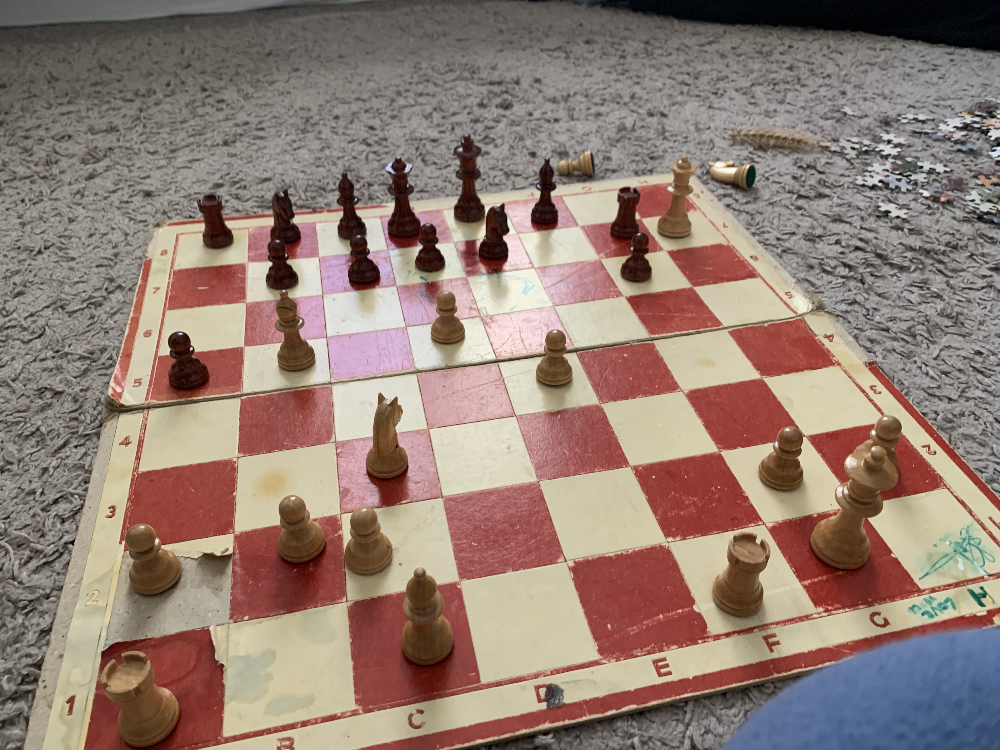

Mina år med schack
Som sagt så har jag spelat schack sen jag var ungefär 13 år gammal. Jag fick intresset efter att flera andra av mina vänner också körde det och då blev jag imblandat i spelet. Därifrån fortsatte jag och mina vänner att lära oss mer om spelet och utvecklades exponentiellt under bara ett år!
Tyvärr fick jag däremot nya intressen och många kring mig slutade spela schack.
De senaste 2 åren har jag pensionerat från spelet men då och då ändå kör en runda
Varför jag gillar spelet
Jag tycker om Schack eftersom att det alltid känns spännande men samtidigt läskigt att spela mot någon. Jag känner stolthet när jag vinner och besvikelse när jag förlorar. Dessutom är det alltid kul att se hur mycket jag har utvecklats i spelet, inte bara skickligheten men också personer jag har mött
Schack och vänner
Som sagt blev jag indragen i schack på grund av mina vänner, men under tiden jag har spelat har jag också mött strålande människor och en varm och välkomnande gemenskap. Jag har t.ex kunnat spela schack med mina kusiner och syskon och då bildad vackra minnen.
Här är ett av dem: 